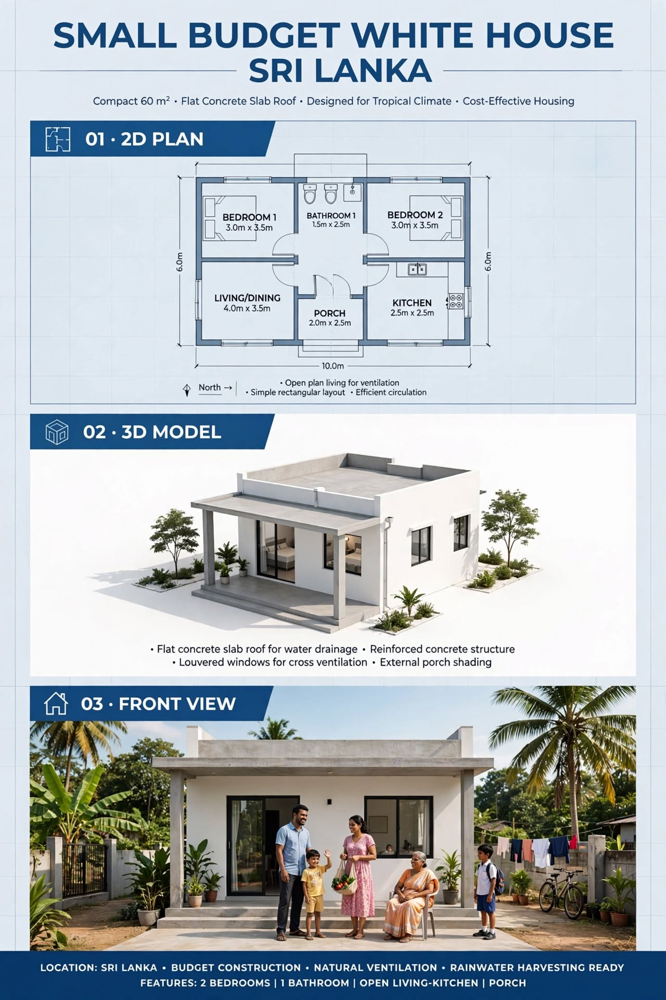

SMALL HOUSE PLANS · ARTICLE 06
60 m² Small Budget White House Plan for Sri Lanka
A compact two-bedroom white house concept with a flat concrete roof, porch and tropical-climate planning notes.

This guide reviews the supplied image as a design concept. It separates what is visibly stated in the drawing from items that still need professional measurement and confirmation.
1. Understanding the 2D Layout
The drawing uses a simple rectangular 10 m by 6 m arrangement. Bedroom 1 and Bedroom 2 are placed at opposite ends of the rear zone, with the bathroom between them. The living/dining room is at the front-left and the kitchen is at the front-right. A small porch marks the central entrance. This arrangement separates sleeping rooms from the shared family area and keeps the overall building form straightforward.
2. Room Schedule from the Drawing
| Space | Labelled dimensions | Area from label |
|---|---|---|
| Bedroom 1 | 3.0 × 3.5 m | 10.5 m² |
| Bedroom 2 | 3.0 × 3.5 m | 10.5 m² |
| Bathroom | 1.5 × 2.5 m | 3.75 m² |
| Living / dining | 4.0 × 3.5 m | 14 m² |
| Kitchen | 2.5 × 2.5 m | 6.25 m² |
| Porch | 2.0 × 2.5 m | 5 m² |
3. Furniture and Everyday Use
A 3.0 m × 3.5 m bedroom can be tested with a double bed, wardrobe and compact bedside tables. Confirm that the wardrobe does not obstruct the window or door. In the living/dining room, use a modest sofa and a small dining table; keep the path from the porch to the kitchen and bedrooms unobstructed. The 2.5 m × 2.5 m kitchen needs careful appliance selection and compact counter planning.
4. Flat Roof and Tropical Climate
The exterior render shows a flat concrete roof and a shaded front porch. A flat roof requires carefully designed falls, waterproofing, drainage outlets, overflow provisions and maintenance access. The roof structure and slab reinforcement must be designed by an engineer; the illustration is not a structural specification. Louvred or operable windows can support cross-ventilation when openings are placed on suitable sides of the site.
5. Openings, Water and Electrical Planning
Check the position and size of every bedroom window, living-room opening, kitchen window and bathroom ventilator. Place switches near doorways and provide socket outlets for the refrigerator, cooking appliances and living area. Group kitchen and bathroom plumbing sensibly while keeping drainage accessible for maintenance. Rainwater harvesting can be considered if gutters, filters, storage and overflow are designed as a complete system.
Construction, Services and Budget Planning
Before construction, confirm the site boundaries, access, levels, soil conditions and approval requirements. A qualified local professional should prepare the measured architectural and structural drawings. The normal sequence is setting out, foundations, floor and wall construction, roof installation, first-fix plumbing and electrical work, plastering, waterproofing, doors and windows, finishes, testing and final inspection.
Prepare a project-specific bill of quantities rather than relying on a generic online price. Include excavation, concrete, reinforcement, blocks or bricks, roof materials, doors, windows, plumbing, electrical work, waterproofing, flooring, paint, labour, transport, approvals and a contingency. Actual costs in Sri Lanka vary by district, access, soil, specification, supplier and quotation date.
Important Professional Checks
- Verify all external and internal dimensions on a scaled drawing.
- Coordinate door swings, window openings, furniture clearances and circulation.
- Have foundation, columns, beams, lintels and roof structure designed for the site.
- Plan safe electrical circuits, earthing, water supply, drainage and ventilation.
- Check local planning rules, setbacks, approvals and applicable building standards.
Disclaimer: This article explains an illustrative design concept. It is not an architectural, structural, engineering or cost-certified document and must not be used alone for construction.